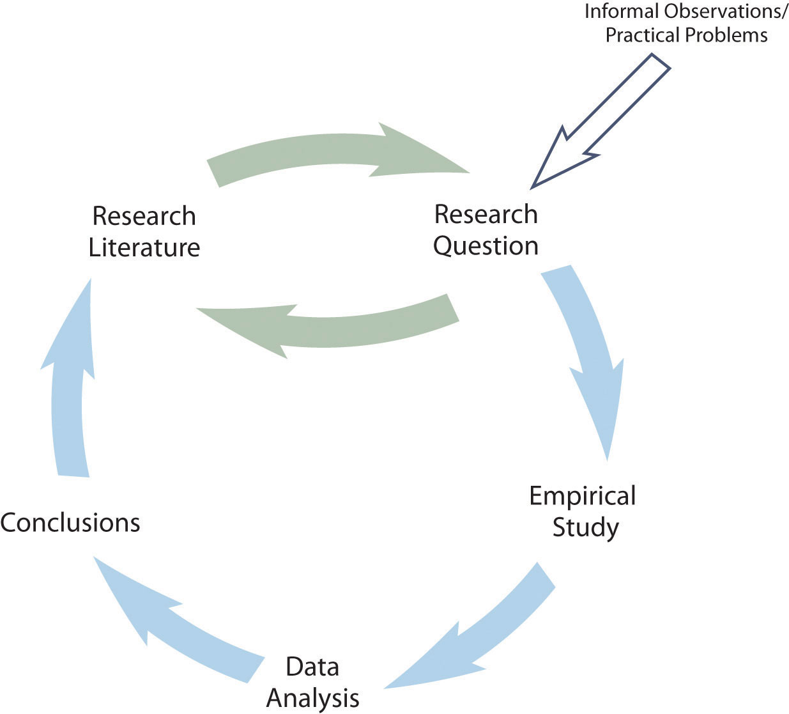

Many people believe that women tend to talk more than men—with some even suggesting that this difference has a biological basis. One widely cited estimate is that women speak 20,000 words per day on average and men speak only 7,000. This claim seems plausible, but is it true? A group of psychologists led by Matias Mehl decided to find out. They checked to see if anyone had actually tried to count the daily number of words spoken by women and men. No one had. So these researchers conducted a study in which female and male college students (369 in all) wore audio recorders while they went about their lives. The result? The women spoke an average of 16,215 words per day and the men spoke an average of 15,669—an extremely small difference that could easily be explained by chance. In an article in the journal Science, these researchers summed up their findings as follows: “We therefore conclude, on the basis of available empirical evidence, that the widespread and highly publicized stereotype about female talkativeness is unfounded” (Mehl, Vazire, Ramirez-Esparza, Slatcher, & Pennebaker, 2007, p. 82).Mehl, M. R., Vazire, S., Ramirez-Esparza, N., Slatcher, R. B., & Pennebaker, J. W. (2007). Are women really more talkative than men? Science, 317, 82.
Psychology is usually defined as the scientific study of human behavior and mental processes, and this example illustrates the features that make it scientific. In this chapter, we look closely at these features, introduce a model of scientific research in psychology, and address several basic questions that students often have about it. Who conducts scientific research in psychology? Why? Does scientific psychology tell us anything that common sense does not? Why should I bother to learn the scientific approach—especially if I want to be a clinical psychologist and not a researcher? These are extremely good questions, by the way, and answering them now will provide a solid foundation for learning the rest of the material in this book.
Some people are surprised to learn that psychology is a scienceA general way of understanding the natural world featuring systematic empiricism, empirical questions, and public knowledge.. They generally agree that astronomy, biology, and chemistry are sciences but wonder what psychology has in common with these other fields. Before answering this question, however, it is worth reflecting on what astronomy, biology, and chemistry have in common with each other. It is clearly not their subject matter. Astronomers study celestial bodies, biologists study living organisms, and chemists study matter and its properties. It is also not the equipment and techniques that they use. Few biologists would know what to do with a radio telescope, for example, and few chemists would know how to track a moose population in the wild. For these and other reasons, philosophers and scientists who have thought deeply about this question have concluded that what the sciences have in common is a general approach to understanding the natural world. Psychology is a science because it takes this same general approach to understanding one aspect of the natural world: human behavior.
The general scientific approach has three fundamental features (Stanovich, 2010).Stanovich, K. E. (2010). How to think straight about psychology (9th ed.). Boston, MA: Allyn & Bacon. The first is systematic empiricismLearning about the world through careful observation.. Empiricism refers to learning based on observation, and scientists learn about the natural world systematically, by carefully planning, making, recording, and analyzing observations of it. As we will see, logical reasoning and even creativity play important roles in science too, but scientists are unique in their insistence on checking their ideas about the way the world is against their systematic observations. Notice, for example, that Mehl and his colleagues did not trust other people’s stereotypes or even their own informal observations. Instead, they systematically recorded, counted, and compared the number of words spoken by a large sample of women and men. Furthermore, when their systematic observations turned out to conflict with people’s stereotypes, they trusted their systematic observations.
The second feature of the scientific approach—which follows in a straightforward way from the first—is that it is concerned with empirical questionsA question about the way the world actually is that can be answered by making systematic observations.. These are questions about the way the world actually is and, therefore, can be answered by systematically observing it. The question of whether women talk more than men is empirical in this way. Either women really do talk more than men or they do not, and this can be determined by systematically observing how much women and men actually talk. There are many interesting and important questions that are not empirically testable and that science cannot answer. Among them are questions about values—whether things are good or bad, just or unjust, or beautiful or ugly, and how the world ought to be. So although the question of whether a stereotype is accurate or inaccurate is an empirically testable one that science can answer, the question of whether it is wrong for people to hold inaccurate stereotypes is not. Similarly, the question of whether criminal behavior has a genetic component is an empirical question, but the question of what should be done with people who commit crimes is not. It is especially important for researchers in psychology to be mindful of this distinction.
The third feature of science is that it creates public knowledgeDetailed descriptions of research that are available to other researchers and the general public, usually through publication in a professional journal.. After asking their empirical questions, making their systematic observations, and drawing their conclusions, scientists publish their work. This usually means writing an article for publication in a professional journal, in which they put their research question in the context of previous research, describe in detail the methods they used to answer their question, and clearly present their results and conclusions. Publication is an essential feature of science for two reasons. One is that science is a social process—a large-scale collaboration among many researchers distributed across both time and space. Our current scientific knowledge of most topics is based on many different studies conducted by many different researchers who have shared their work with each other over the years. The second is that publication allows science to be self-correcting. Individual scientists understand that despite their best efforts, their methods can be flawed and their conclusions incorrect. Publication allows others in the scientific community to detect and correct these errors so that, over time, scientific knowledge increasingly reflects the way the world actually is.
PseudoscienceA set of beliefs or activities that is claimed to be scientific but lacks one or more of the three features of science. refers to activities and beliefs that are claimed to be scientific by their proponents—and may appear to be scientific at first glance—but are not. Consider the theory of biorhythms (not to be confused with sleep cycles or other biological cycles that do have a scientific basis). The idea is that people’s physical, intellectual, and emotional abilities run in cycles that begin when they are born and continue until they die. The physical cycle has a period of 23 days, the intellectual cycle a period of 33 days, and the emotional cycle a period of 28 days. So, for example, if you had the option of when to schedule an exam, you would want to schedule it for a time when your intellectual cycle will be at a high point. The theory of biorhythms has been around for more than 100 years, and you can find numerous popular books and websites about biorhythms, often containing impressive and scientific-sounding terms like sinusoidal wave and bioelectricity. The problem with biorhythms, however, is that there is no good reason to think they exist (Hines, 1998).Hines, T. M. (1998). Comprehensive review of biorhythm theory. Psychological Reports, 83, 19–64.
A set of beliefs or activities can be said to be pseudoscientific if (a) its adherents claim or imply that it is scientific but (b) it lacks one or more of the three features of science. It might lack systematic empiricism. Either there is no relevant scientific research or, as in the case of biorhythms, there is relevant scientific research but it is ignored. It might also lack public knowledge. People who promote the beliefs or activities might claim to have conducted scientific research but never publish that research in a way that allows others to evaluate it.
A set of beliefs and activities might also be pseudoscientific because it does not address empirical questions. The philosopher Karl Popper was especially concerned with this idea (Popper, 2002).Popper, K. R. (2002). Conjectures and refutations: The growth of scientific knowledge. New York, NY: Routledge. He argued more specifically that any scientific claim must be expressed in such a way that there are observations that would—if they were made—count as evidence against the claim. In other words, scientific claims must be falsifiableAn important property of scientific claims. A claim is falsifiable if there is an observation that would—if it were made—count as evidence against the claim.. The claim that women talk more than men is falsifiable because systematic observations could reveal either that they do talk more than men or that they do not. As an example of an unfalsifiable claim, consider that many people who study extrasensory perception (ESP) and other psychic powers claim that such powers can disappear when they are observed too closely. This makes it so that no possible observation would count as evidence against ESP. If a careful test of a self-proclaimed psychic showed that she predicted the future at better-than-chance levels, this would be consistent with the claim that she had psychic powers. But if she failed to predict the future at better-than-chance levels, this would also be consistent with the claim because her powers can supposedly disappear when they are observed too closely.
Why should we concern ourselves with pseudoscience? There are at least three reasons. One is that learning about pseudoscience helps bring the fundamental features of science—and their importance—into sharper focus. A second is that biorhythms, psychic powers, astrology, and many other pseudoscientific beliefs are widely held and are promoted on the Internet, on television, and in books and magazines. Learning what makes them pseudoscientific can help us to identify and evaluate such beliefs and practices when we encounter them. A third reason is that many pseudosciences purport to explain some aspect of human behavior and mental processes, including biorhythms, astrology, graphology (handwriting analysis), and magnet therapy for pain control. It is important for students of psychology to distinguish their own field clearly from this “pseudopsychology.”
An excellent source for information on pseudoscience is The Skeptic’s Dictionary (http://www.skepdic.com). Among the pseudoscientific beliefs and practices you can learn about are the following:
Figure 1.2 "A Simple Model of Scientific Research in Psychology" presents a more specific model of scientific research in psychology. The researcher (who more often than not is really a small group of researchers) formulates a research question, conducts a study designed to answer the question, analyzes the resulting data, draws conclusions about the answer to the question, and publishes the results so that they become part of the research literature. Because the research literature is one of the primary sources of new research questions, this process can be thought of as a cycle. New research leads to new questions, which lead to new research, and so on. Figure 1.2 "A Simple Model of Scientific Research in Psychology" also indicates that research questions can originate outside of this cycle either with informal observations or with practical problems that need to be solved. But even in these cases, the researcher would start by checking the research literature to see if the question had already been answered and to refine it based on what previous research had already found.
Figure 1.2 A Simple Model of Scientific Research in Psychology
The research by Mehl and his colleagues is described nicely by this model. Their question—whether women are more talkative than men—was suggested to them both by people’s stereotypes and by published claims about the relative talkativeness of women and men. When they checked the research literature, however, they found that this question had not been adequately addressed in scientific studies. They conducted a careful empirical study, analyzed the results (finding very little difference between women and men), and published their work so that it became part of the research literature. The publication of their article is not the end of the story, however, because their work suggests many new questions (about the reliability of the result, about potential cultural differences, etc.) that will likely be taken up by them and by other researchers inspired by their work.
As another example, consider that as cell phones became more widespread during the 1990s, people began to wonder whether, and to what extent, cell phone use had a negative effect on driving. Many psychologists decided to tackle this question scientifically (Collet, Guillot, & Petit, 2010).Collet, C., Guillot, A., & Petit, C. (2010). Phoning while driving I: A review of epidemiological, psychological, behavioural and physiological studies. Ergonomics, 53, 589–601. It was clear from previously published research that engaging in a simple verbal task impairs performance on a perceptual or motor task carried out at the same time, but no one had studied the effect specifically of cell phone use on driving. Under carefully controlled conditions, these researchers compared people’s driving performance while using a cell phone with their performance while not using a cell phone, both in the lab and on the road. They found that people’s ability to detect road hazards, reaction time, and control of the vehicle were all impaired by cell phone use. Each new study was published and became part of the growing research literature on this topic.
Scientific research in psychology is generally conducted by people with doctoral degrees (usually the doctor of philosophy [PhD]The highest degree in most academic fields, including psychology. Scientific researchers in psychology typically have this degree.) and master’s degrees in psychology and related fields, often supported by research assistants with bachelor’s degrees or other relevant training. Some of them work for government agencies (e.g., the National Institute of Mental Health), for nonprofit organizations (e.g., the American Cancer Society), or in the private sector (e.g., in product development). However, the majority of them are college and university faculty, who often collaborate with their graduate and undergraduate students. Although some researchers are trained and licensed as clinicians—especially those who conduct research in clinical psychology—the majority are not. Instead, they have expertise in one or more of the many other subfields of psychology: behavioral neuroscience, cognitive psychology, developmental psychology, personality psychology, social psychology, and so on. Doctoral-level researchers might be employed to conduct research full-time or, like many college and university faculty members, to conduct research in addition to teaching classes and serving their institution and community in other ways.
Of course, people also conduct research in psychology because they enjoy the intellectual and technical challenges involved and the satisfaction of contributing to scientific knowledge of human behavior. You might find that you enjoy the process too. If so, your college or university might offer opportunities to get involved in ongoing research as either a research assistant or a participant. Of course, you might find that you do not enjoy the process of conducting scientific research in psychology. But at least you will have a better understanding of where scientific knowledge in psychology comes from, an appreciation of its strengths and limitations, and an awareness of how it can be applied to solve practical problems in psychology and everyday life.
A fun and easy way to follow current scientific research in psychology is to read any of the many excellent blogs devoted to summarizing and commenting on new findings. Among them are the following:
You can also browse to http://www.researchblogging.org, select psychology as your topic, and read entries from a wide variety of blogs.
People have always been curious about the natural world, including themselves and their behavior. (In fact, this is probably why you are studying psychology in the first place.) Science grew out of this natural curiosity and has become the best way to achieve detailed and accurate knowledge. Keep in mind that most of the phenomena and theories that fill psychology textbooks are the products of scientific research. In a typical introductory psychology textbook, for example, one can learn about specific cortical areas for language and perception, principles of classical and operant conditioning, biases in reasoning and judgment, and people’s surprising tendency to obey authority. And scientific research continues because what we know right now only scratches the surface of what we can know.
Scientific research is often classified as being either basic or applied. Basic researchScientific research that is conducted primarily for the sake of learning something new. in psychology is conducted primarily for the sake of achieving a more detailed and accurate understanding of human behavior, without necessarily trying to address any particular practical problem. The research of Mehl and his colleagues falls into this category. Applied researchScientific research that is conducted primarily to solve some practical problem. is conducted primarily to address some practical problem. Research on the effects of cell phone use on driving, for example, was prompted by safety concerns and has led to the enactment of laws to limit this practice. Although the distinction between basic and applied research is convenient, it is not always clear-cut. For example, basic research on sex differences in talkativeness could eventually have an effect on how marriage therapy is practiced, and applied research on the effect of cell phone use on driving could produce new insights into basic processes of perception, attention, and action.
Some people wonder whether the scientific approach to psychology is necessary. Can we not reach the same conclusions based on common sense or intuition? Certainly we all have intuitive beliefs about people’s behavior, thoughts, and feelings—and these beliefs are collectively referred to as folk psychologyPeople’s intuitive beliefs about human behavior and mental processes.. Although much of our folk psychology is probably reasonably accurate, it is clear that much of it is not. For example, most people believe that anger can be relieved by “letting it out”—perhaps by punching something or screaming loudly. Scientific research, however, has shown that this approach tends to leave people feeling more angry, not less (Bushman, 2002).Bushman, B. J. (2002). Does venting anger feed or extinguish the flame? Catharsis, rumination, distraction, anger, and aggressive responding. Personality and Social Psychology Bulletin, 28, 724–731. Likewise, most people believe that no one would confess to a crime that he or she had not committed, unless perhaps that person was being physically tortured. But again, extensive empirical research has shown that false confessions are surprisingly common and occur for a variety of reasons (Kassin & Gudjonsson, 2004).Kassin, S. M., & Gudjonsson, G. H. (2004). The psychology of confession evidence: A review of the literature and issues. Psychological Science in the Public Interest, 5, 33–67.
In 50 Great Myths of Popular Psychology, psychologist Scott Lilienfeld and colleagues discuss several widely held commonsense beliefs about human behavior that scientific research has shown to be incorrect (Lilienfeld, Lynn, Ruscio, & Beyerstein, 2010).Lilienfeld, S. O., Lynn, S. J., Ruscio, J., & Beyerstein, B. L. (2010). 50 great myths of popular psychology. Malden, MA: Wiley-Blackwell. Here is a short list.
How can so many of our intuitive beliefs about human behavior be so wrong? Notice that this is a psychological question, and it just so happens that psychologists have conducted scientific research on it and identified many contributing factors (Gilovich, 1991).Gilovich, T. (1991). How we know what isn’t so: The fallibility of human reason in everyday life. New York, NY: Free Press. One is that forming detailed and accurate beliefs requires powers of observation, memory, and analysis to an extent that we do not naturally possess. It would be nearly impossible to count the number of words spoken by the women and men we happen to encounter, estimate the number of words they spoke per day, average these numbers for both groups, and compare them—all in our heads. This is why we tend to rely on mental shortcuts in forming and maintaining our beliefs. For example, if a belief is widely shared—especially if it is endorsed by “experts”—and it makes intuitive sense, we tend to assume it is true. This is compounded by the fact that we then tend to focus on cases that confirm our intuitive beliefs and not on cases that disconfirm them. This is called confirmation biasThe tendency to notice and remember evidence that is consistent with what we already believe and to ignore evidence that is inconsistent with what we already believe.. For example, once we begin to believe that women are more talkative than men, we tend to notice and remember talkative women and silent men but ignore or forget silent women and talkative men. We also hold incorrect beliefs in part because it would be nice if they were true. For example, many people believe that calorie-reducing diets are an effective long-term treatment for obesity, yet a thorough review of the scientific evidence has shown that they are not (Mann et al., 2007).Mann, T., Tomiyama, A. J., Westling, E., Lew, A., Samuels, B., & Chatman, J. (2007). Medicare’s search for effective obesity treatments: Diets are not the answer. American Psychologist, 62, 220–233. People may continue to believe in the effectiveness of dieting in part because it gives them hope for losing weight if they are obese or makes them feel good about their own “self-control” if they are not.
Scientists—especially psychologists—understand that they are just as susceptible as anyone else to intuitive but incorrect beliefs. This is why they cultivate an attitude of skepticismA critical-thinking attitude that involves considering alternatives and searching for evidence before accepting that a belief or claim is true.. Being skeptical does not mean being cynical or distrustful, nor does it mean questioning every belief or claim one comes across (which would be impossible anyway). Instead, it means pausing to consider alternatives and to search for evidence—especially systematically collected empirical evidence—when there is enough at stake to justify doing so. Imagine that you read a magazine article that claims that giving children a weekly allowance is a good way to help them develop financial responsibility. This is an interesting and potentially important claim (especially if you have kids). Taking an attitude of skepticism, however, would mean pausing to ask whether it might be instead that receiving an allowance merely teaches children to spend money—perhaps even to be more materialistic. Taking an attitude of skepticism would also mean asking what evidence supports the original claim. Is the author a scientific researcher? Is any scientific evidence cited? If the issue was important enough, it might also mean turning to the research literature to see if anyone else had studied it.
Because there is often not enough evidence to fully evaluate a belief or claim, scientists also cultivate tolerance for uncertaintyA critical-thinking attitude that involves withholding judgment about whether a belief or claim is true when there is insufficient evidence for it.. They accept that there are many things that they simply do not know. For example, it turns out that there is no scientific evidence that receiving an allowance causes children to be more financially responsible, nor is there any scientific evidence that it causes them to be materialistic. Although this kind of uncertainty can be problematic from a practical perspective—for example, making it difficult to decide what to do when our children ask for an allowance—it is exciting from a scientific perspective. If we do not know the answer to an interesting and empirically testable question, science may be able to provide the answer.
Practice: For each of the following intuitive beliefs about human behavior, list three reasons that it might be true and three reasons that it might not be true:
Again, psychology is the scientific study of behavior and mental processes. But it is also the application of scientific research to “help people, organizations, and communities function better” (American Psychological Association, 2011).American Psychological Association. (2011). About APA. Retrieved from http://www.apa.org/about. By far the most common and widely known application is the clinical practice of psychologyThe diagnosis and treatment of psychological disorders and related problems.—the diagnosis and treatment of psychological disorders and related problems. Let us use the term clinical practice broadly to refer to the activities of clinical and counseling psychologists, school psychologists, marriage and family therapists, licensed clinical social workers, and others who work with people individually or in small groups to identify and solve their psychological problems. It is important to consider the relationship between scientific research and clinical practice because many students are especially interested in clinical practice, perhaps even as a career.
The main point is that psychological disorders and other behavioral problems are part of the natural world. This means that questions about their nature, causes, and consequences are empirically testable and therefore subject to scientific study. As with other questions about human behavior, we cannot rely on our intuition or common sense for detailed and accurate answers. Consider, for example, that dozens of popular books and thousands of websites claim that adult children of alcoholics have a distinct personality profile, including low self-esteem, feelings of powerlessness, and difficulties with intimacy. Although this sounds plausible, scientific research has demonstrated that adult children of alcoholics are no more likely to have these problems than anybody else (Lilienfeld et al., 2010).Lilienfeld, S. O., Lynn, S. J., Ruscio, J., & Beyerstein, B. L. (2010). 50 great myths of popular psychology. Malden, MA: Wiley-Blackwell. Similarly, questions about whether a particular psychotherapy works are empirically testable questions that can be answered by scientific research. If a new psychotherapy is an effective treatment for depression, then systematic observation should reveal that depressed people who receive this psychotherapy improve more than a similar group of depressed people who do not receive this psychotherapy (or who receive some alternative treatment). Treatments that have been shown to work in this way are called empirically supported treatmentsA treatment for a psychological problem that has been shown by scientific research to result in greater improvement than no treatment, a placebo, or some alternative treatment..
An empirically supported treatment is one that has been studied scientifically and shown to result in greater improvement than no treatment, a placebo, or some alternative treatment. These include many forms of psychotherapy, which can be as effective as standard drug therapies. Among the forms of psychotherapy with strong empirical support are the following:
For a more complete list, see the following website, which is maintained by Division 12 of the American Psychological Association, the Society for Clinical Psychology: http://www.psychology.sunysb.edu/eklonsky-/division12.
Many in the clinical psychology community have argued that their field has not paid enough attention to scientific research—for example, by failing to use empirically supported treatments—and have suggested a variety of changes in the way clinicians are trained and treatments are evaluated and put into practice. Others believe that these claims are exaggerated and the suggested changes are unnecessary (Norcross, Beutler, & Levant, 2005).Norcross, J. C., Beutler, L. E., & Levant, R. F. (Eds.). (2005). Evidence-based practices in mental health: Debate and dialogue on the fundamental questions. Washington, DC: American Psychological Association. On both sides of the debate, however, there is agreement that a scientific approach to clinical psychology is essential if the goal is to diagnose and treat psychological problems based on detailed and accurate knowledge about those problems and the most effective treatments for them. So not only is it important for scientific research in clinical psychology to continue, but it is also important for clinicians who never conduct a scientific study themselves to be scientifically literate so that they can read and evaluate new research and make treatment decisions based on the best available evidence.
Discussion: Some clinicians argue that what they do is an “art form” based on intuition and personal experience and therefore cannot be evaluated scientifically. Write a paragraph about how satisfied you would be with such a clinician and why from each of three perspectives: